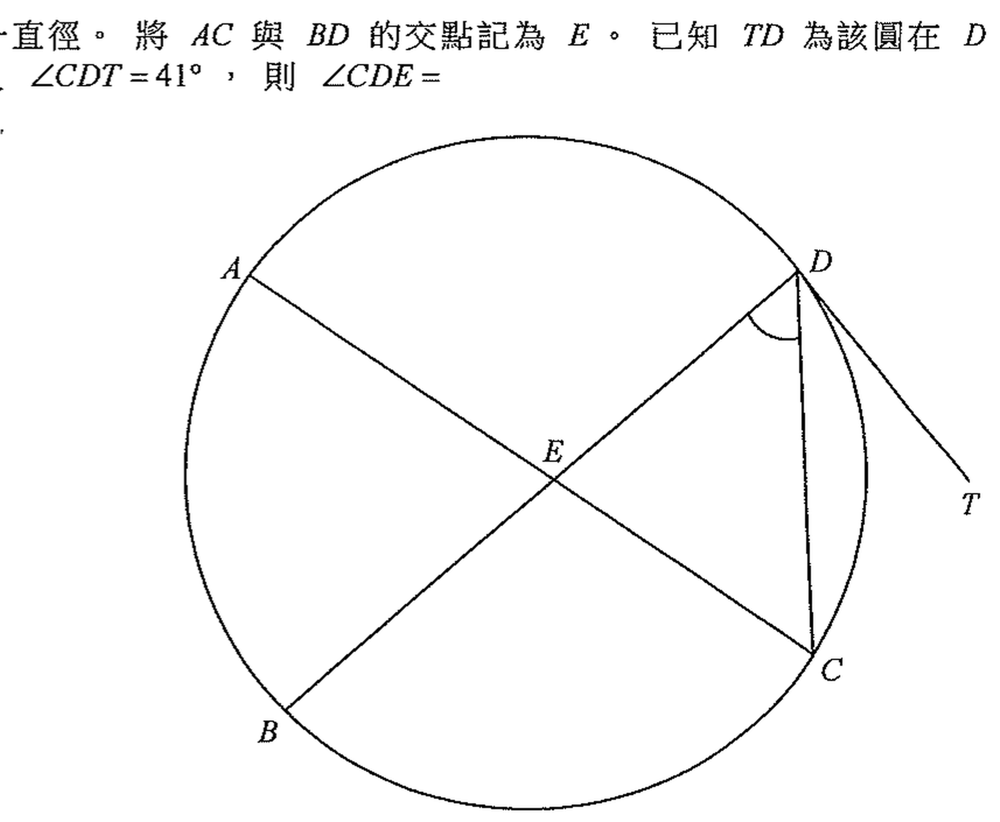
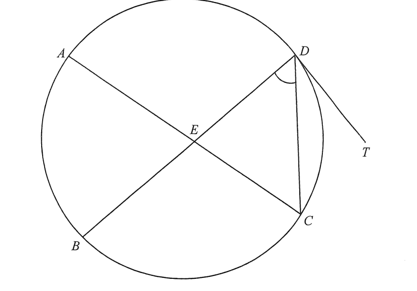

2025 DSE 數學 P2 Q38 答案＋詳解｜答對率 44%
官方答案
A
歷年考生答對率 44%（官方統計）
題目（中文卷）
圖中，$ AC $ 為圓 $ ABCD $ 的一直徑。將 $ AC $ 與 $ BD $ 的交點記為 $ E $。已知 $ TD $ 為該圓在 $ D $ 的切線。若 $ \angle BEC = 96^\circ $ 及 $ \angle CDT = 41^\circ $，則 $ \angle CDE = $

- A. $ 47^\circ $
- B. $ 48^\circ $
- C. $ 52^\circ $
- D. $ 55^\circ $
English version（英文卷題目）
In the figure, $ AC $ is a diameter of the circle $ ABCD $. Denote the point of intersection of $ AC $ and $ BD $ by $ E $. It is given that $ TD $ is the tangent to the circle at $ D $. If $ \angle BEC = 96^\circ $ and $ \angle CDT = 41^\circ $, then $ \angle CDE = $

- A. $ 47^\circ $
- B. $ 48^\circ $
- C. $ 52^\circ $
- D. $ 55^\circ $
官方題解 / 評卷參考
答案：A
- 切線與弦的夾角 $=$ 同弓形內的圓周角：$\angle CDT=41^\circ=\angle CAD$，故弧 $CD=2\times41^\circ=82^\circ$。
- $AC$ 為直徑 $\Rightarrow\angle ADC=90^\circ\Rightarrow$ 弧 $AD=180^\circ-82^\circ=98^\circ$。
- 兩弦交角：$\angle BEC=\dfrac12(\text{弧}BC+\text{弧}AD)$，即 $96^\circ=\dfrac12(\text{弧}BC+98^\circ)\Rightarrow$ 弧 $BC=94^\circ$。
- $E$ 在 $BD$ 上，故 $\angle CDE=\angle CDB=\dfrac12\text{弧}BC=47^\circ$。
錯項分析：
- B. 把弧 $BC$ 直接取成 $96^\circ$（把 $\angle BEC$ 當成弧的度數，忘記除以 $2$ 及減去弧 $AD$）。
- C. 把弧 $AD$ 算成 $88^\circ$（少減了一段），令弧 $BC$ 變成 $104^\circ$，得 $52^\circ$。
- D. 把 $\angle CDE$ 當成 $\angle CDA$ 的一部分（用 $\angle ADC-\angle CDT$ 之類），用錯了三角形。